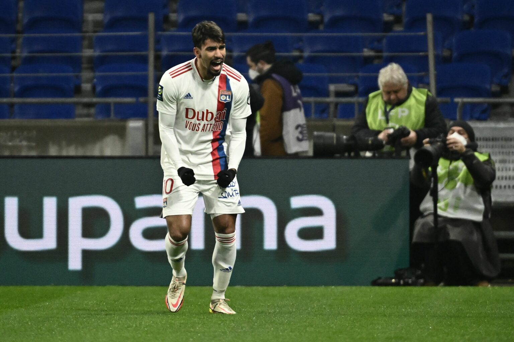
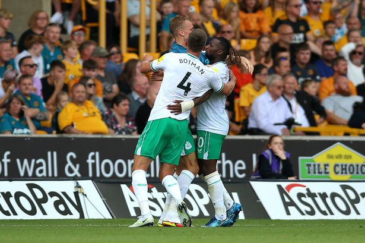
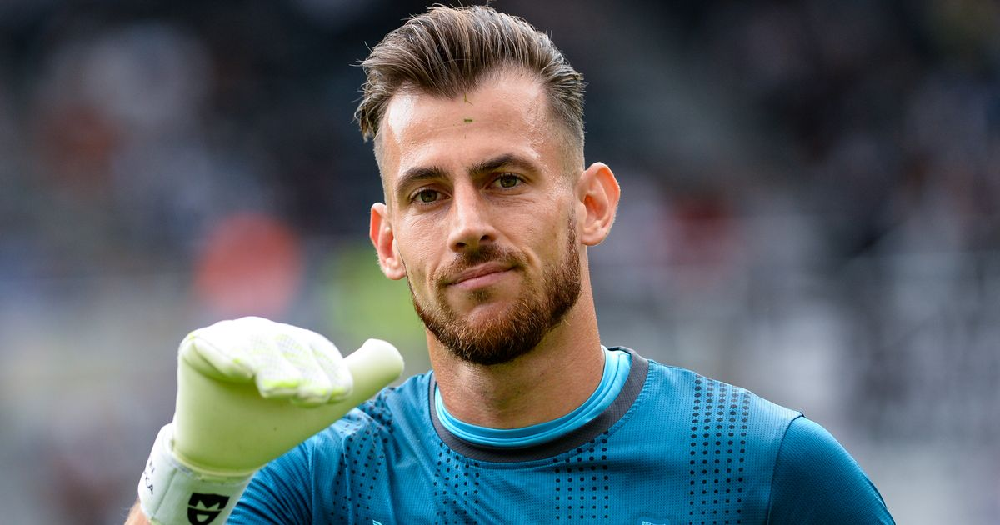
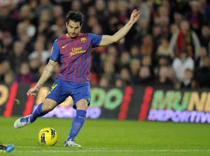
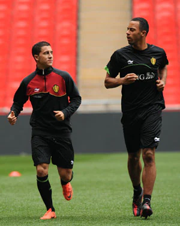
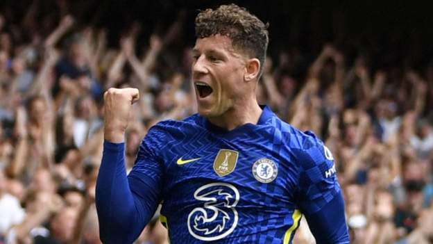
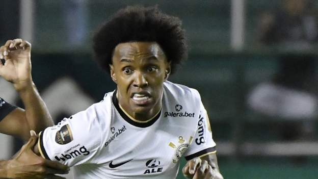
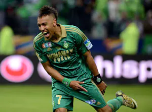

The Greatest
show on the
earth
Get the best blogs on football from everywhere and
all the upcoming matches,schedules and much more.
Watch Live

Juventus
Juventus lining up cash-plus-player bid for Lyon’s Lucas Paqueta
10h
25

Newcastle
Allan Saint-Maximin thunderbolt earns Newcastle United late point at Wolves
16h
65

ManU
Newcastle United transfer news LIVE: Dubravka agreement reached with Man Utd
22h
70

Barcelona
Cesc Fabregas showed why Barcelona cannot afford to let him go
1d
60

Belgium
The Belgium revolution starts in Tottenham, but spreads across Europe
1d
80

Chelsea
Ross Barkley: Midfielder becomes free agent after leaving Chelsea
2d
90
Valencia
Edinson Cavani: Valencia agree to sign former Man Utd striker
2d
80

Arsenal
Fulham: Willian close to return to Premier League
2d
100

Dortmund
Pierre-Emerick Aubameyang is here to entertain
3d
110
View All